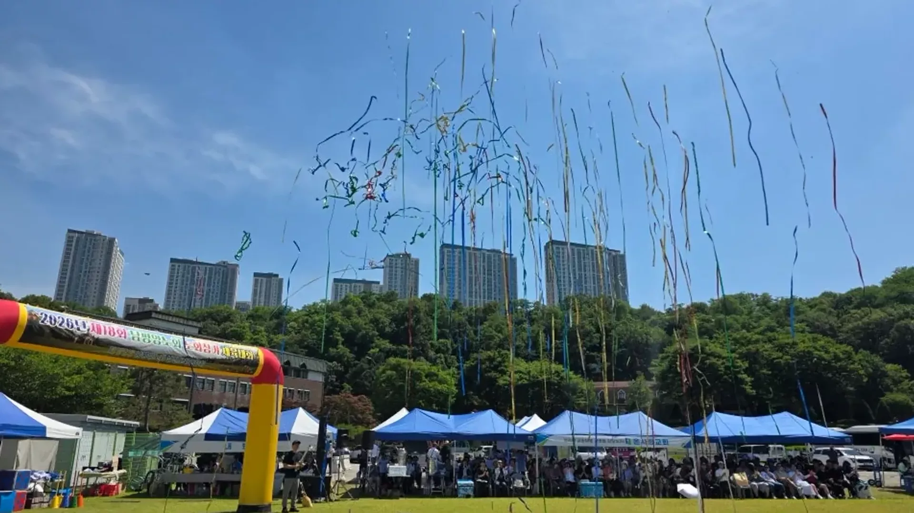
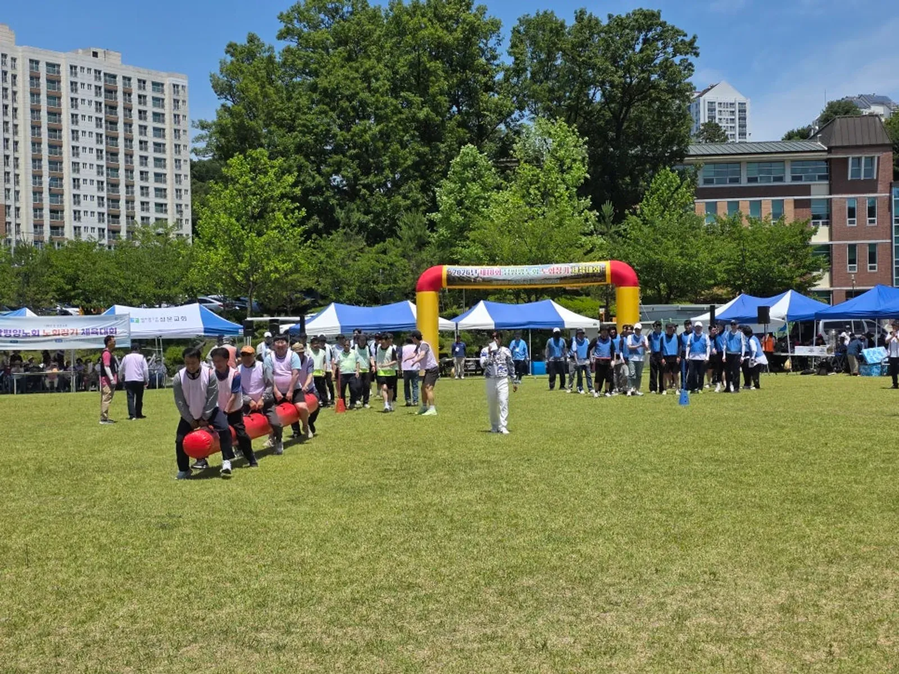
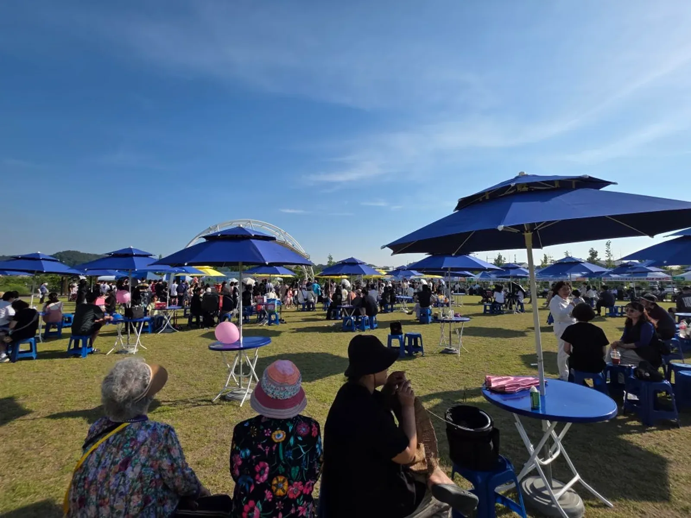
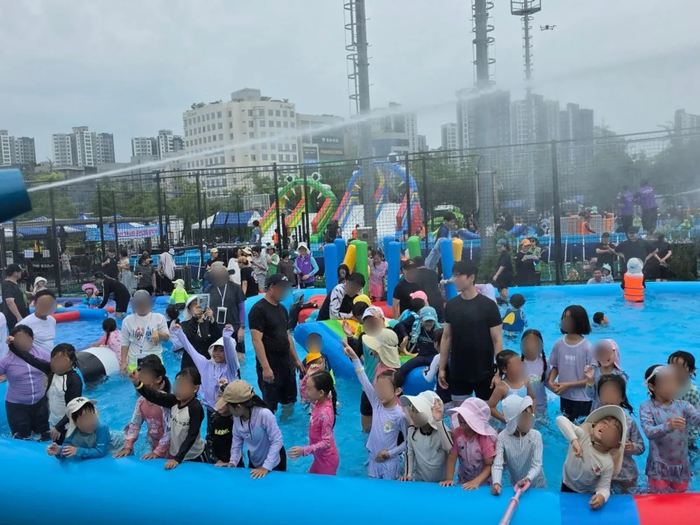
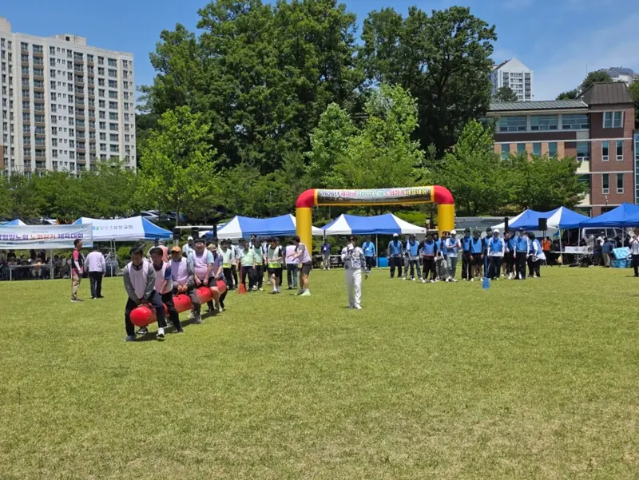
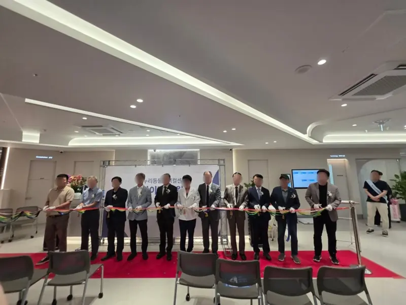
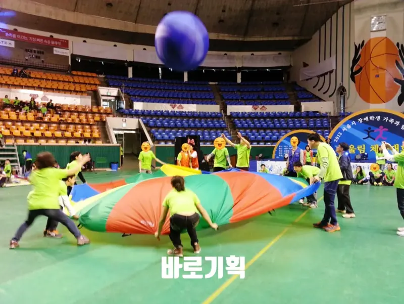
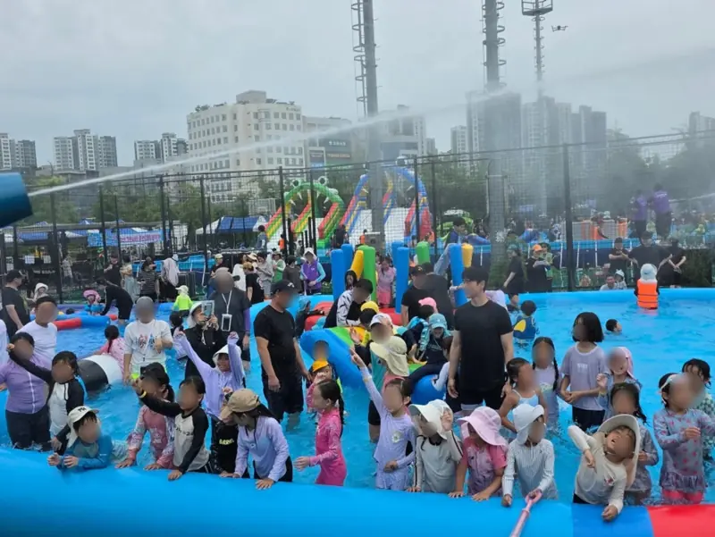

Since 2005 · Ansan · Hwaseong · Gyeonggi
작은 행사도
정성껏 하겠습니다.
체육대회 · 지역축제 · 커팅식 · 송년회부터 음향 · 무대 · 조명 · 천막까지. 2005년부터 안산 · 화성 등 경기 지역에서 행사를 준비해 온 바로기획이 처음부터 끝까지 함께합니다.
- 2005~안산에서 시작한 행사 경력
- 안산 · 화성 · 경기본사 안산 상록구 사동
- 기획부터 장비까지음향 · 무대 · 조명 · 천막 · 섭외
- 08:00–20:00전화 · 문자 상담 시간
작은 행사도
정성껏 하겠습니다.
안녕하세요, 바로기획 대표 김선호입니다. 2005년부터 안산과 화성을 중심으로 경기 지역에서 체육대회 · 지역축제 · 준공식 · 송년회를 준비해 왔습니다.
행사는 크기보다 준비가 중요하다고 생각합니다. 음향 · 무대 · 조명 · 천막 렌탈, 공연 섭외까지 경험 많은 한 팀이 챙기니 담당자님은 행사 내용에만 집중하시면 됩니다. 수백 명이 모이는 축제든, 가족 같은 작은 모임이든 똑같이 정성을 다하겠습니다.
행사 하나를 통째로 맡기셔도,
필요한 것만 고르셔도 됩니다.



-

참가 인원과 연령대에 맞춰 종목을 짜고, 음향 · 게임도구 · 전문 MC · 진행 스텝까지 하루를 통째로 맡습니다. 600여 명이 모인 교회 연합 체육대회도, 100명 안팎의 소규모 운동회도 같은 정성으로 준비합니다.
-
무대와 음향, 그늘 천막과 파라솔, 체험 부스, 공연까지. 남녀노소가 함께 머무는 축제가 되도록 프로그램과 동선을 같이 고민합니다.
-

레드카펫 동선, 오색띠와 금장가위, 흰장갑과 쟁반, 풍선장식과 포토존, 음향과 사회자까지. 짧은 순서일수록 빈틈없이 준비합니다.
-

처음 만난 사람도 금세 한 팀이 되도록 레크리에이션 강사와 MC가 분위기를 이끕니다. 음향 · 조명 · 경품 진행까지 한 번에 준비합니다.
-

대형 풀장과 워터슬라이드, 물놀이 기구, 영유아존과 안전요원 배치까지. 비가 와도 안전사고 없이 마친 화성 수노을 물놀이축제의 경험으로 준비합니다.
음향 · 무대 · 조명 · 천막,
공연 섭외까지 한 팀이 준비합니다.
업체를 여럿 알아보실 필요가 없습니다. 장비 설치부터 운영, 철거까지 바로기획이 직접 챙깁니다.
말보다 현장이 먼저입니다.
바로기획 블로그에 직접 기록한 최근 행사 이야기입니다. 누르면 사진과 함께 자세한 글을 보실 수 있습니다.
상담부터 철거까지,
다섯 단계면 됩니다.
처음 행사를 맡으셨어도 괜찮습니다. 무엇부터 해야 할지 저희가 물어보며 같이 채워 갑니다.
전화 · 문자 · 문의 폼으로 날짜 · 장소 · 인원 · 행사 성격을 들려주세요.
참가 인원 · 연령대 · 실내외 여부를 확인하고 필요한 것만 골라 구성을 제안합니다.
종목 · 순서 · 장비 · 섭외를 확정하고 현장 조건(전기 · 바닥 · 진입)을 점검합니다.
일찍 도착해 설치하고, MC와 스텝이 처음부터 끝까지 현장을 지킵니다.
철거와 주변 정리까지 마치고, 다음 행사를 위한 기록을 남깁니다.
바로기획이 다녀온 현장.
체육대회부터 물놀이축제까지,
현장의 하루를 담았습니다.
안산 · 화성 · 수원 · 용인에서 바로기획이 직접 준비한 행사 현장입니다.
- 수원 교회 연합 체육대회 (600여 명)
- 화성 새솔동 수노을 물놀이축제
- 안산 개원식 커팅식 · 주민 축제
안산에서 출발해
경기 어디든 달려갑니다.
본사는 안산 상록구 사동입니다. 2005년부터 안산 · 화성을 중심으로 시흥 · 수원 · 용인 · 안양 등 경기 지역 행사를 맡아 왔습니다. 그 밖의 지역도 전화 주시면 상담해 드립니다.
행사 날짜가 잡히셨나요?
바로기획이 바로 준비합니다.
규모가 작아도 괜찮습니다. 날짜 · 장소 · 대략의 인원만 알려 주세요. (상담 오전 8시 ~ 저녁 8시)